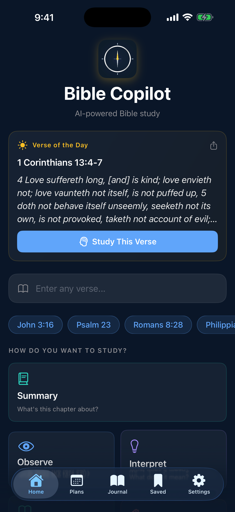

Bring the verse.
Ask about the passage you are reading—without needing an account or a setup ritual.
“What does Isaiah 43:2 mean in the context of exile?”
Bible Copilot is a verse-anchored Bible study app. Begin with Scripture, see the context, and keep following the thread through six guided ways to study.

“Teach me your way, O Lord…”
Psalm 86:11
Most Bible questions are not solved in one answer. They lead back to the passage, outward to its setting, and onward to the next question worth asking.
Ask about the passage you are reading—without needing an account or a setup ritual.
Move through Summary, Observe, Interpret, Theology, Apply, and Apologetics: six ways to stay close to the text.
When one question leads to another, Bible Copilot Pro is the place to keep going.
The design gives the passage room to speak. The experience puts the next faithful question within reach.
Pro is not a detour from the passage. It is the invitation to continue your study after the free daily questions have carried you to the edge of the next one.
Bring the verse you are thinking about. Bible Copilot will help you take the next step with Scripture in view.
Start with a verse